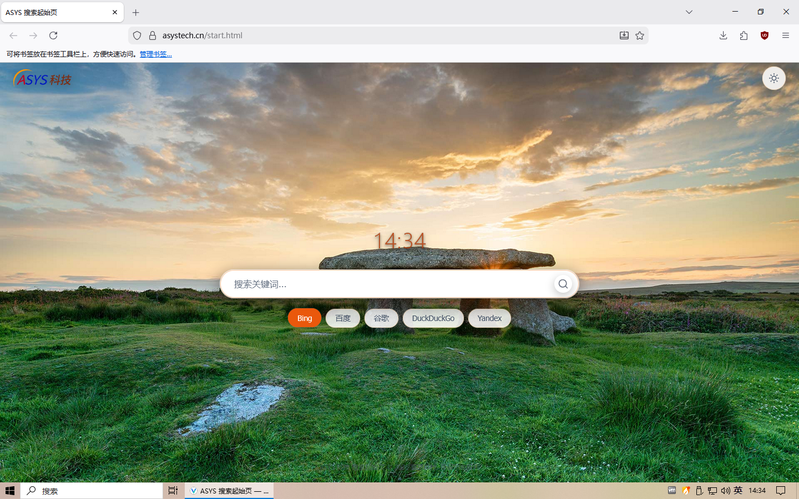

隐私 · 快速 · 易用

Vantage 是一款由 ASYS 科技 深度定制的 Firefox 浏览器，基于 LibreWolf 代码实现，专注于隐私 · 快速 · 易用。
⚠️ 注意：Vantage 与 LibreWolf 或 Mozilla 官方无任何隶属关系或商业合作。
我们的目标：在保留 Firefox 强大扩展生态的同时，为用户提供开箱即用的隐私增强体验，摆脱追踪、遥测与不必要的干扰。
| 特性 | 说明 |
|---|---|
| 🚫 无遥测 | 完全禁用 Firefox 遥测、实验功能、广告推送及数据收集模块 |
| 🔍 灵活搜索 | 默认集成 Microsoft Bing，支持一键切换百度、谷歌、DuckDuckGo 等引擎 |
| 🛡️ 内置拦截 | 预装 uBlock Origin 等广告/追踪器拦截规则，提升页面加载速度与纯净度 |
| 🔒 隐私加固 | 启用 RFP（Resist Fingerprinting）、禁用 WebRTC 泄露、强制 HTTPS 等硬核隐私策略 |
| 🔄 跨端同步 | 支持登录 Mozilla 账号，无缝同步书签、扩展、主题及配置（可选启用） |
| 🔓 开源透明 | 全部源码公开，欢迎审计、复刻与二次开发 |
🚧 macOS 版本正在适配中，敬请期待
方式一：Debian、Ubuntu 等使用 APT 包管理器的发行版
cd ~
# 通过官网下载（推荐）
wget https://asystech.cn/vantage/vantage-latest.deb
# 或通过 GitHub 下载
# wget https://github.com/asystech-chen/Vantage/releases/download/v148.0-1/vantage_148.0-1_amd64.deb
sudo apt update
sudo apt install -y ./vantage-latest.deb方式二：Rocky 等 RHEL 发行版
cd ~
# 通过 GitHub 下载
wget https://github.com/asystech-chen/Vantage/releases/download/v148.0-1/vantage-148.0_1-1.x86_64.rpm
sudo yum update
sudo yum install -y ./vantage-148.0_1-1.x86_64.rpm方式三：其他发行版（使用 AppImage 包）
cd ~
wget https://github.com/asystech-chen/Vantage/releases/download/v148.0-1/vantage-148.0-1.x86_64.AppImage
chmod +x vantage-148.0-1.x86_64.AppImage
./vantage-148.0-1.x86_64.AppImage方式四：使用压缩包手动安装
tar -xjf Vantage-linux-x86_64.tar.bz2 -C /opt/
ln -s /opt/vantage/vantage /usr/local/bin/vantageabout:preferences#privacy 中的隐私设置⚠️ 修改前请备份配置，不当设置可能影响浏览器稳定性
# 示例：进一步禁用遥测（默认已禁用，供参考）
datareporting.healthreport.uploadEnabled = false
toolkit.telemetry.enabled = false
browser.ping-centre.telemetry = false
# 示例：增强 DNS over HTTPS
network.trr.mode = 3
network.trr.uri = "https://mozilla.cloudflare-dns.com/dns-query"| 快捷键 | 功能 |
|---|---|
Ctrl+Shift+P |
打开隐私浏览窗口 |
Ctrl+Shift+Delete |
快速清除浏览数据 |
Ctrl+L |
聚焦地址栏 |
F11 |
全屏模式 |
我们欢迎任何形式的贡献！🎉
git checkout -b feat/your-featuregit commit -am 'feat: 添加 XXX 功能'git push origin feat/your-feature📌 请确保代码符合 Mozilla 代码规范，并通过基础测试。
Q: Vantage 和 Firefox / LibreWolf 有什么区别？
A: Vantage 基于 LibreWolf 代码基线，由 ASYS 科技针对中文用户习惯与隐私需求进行二次定制，预置更适合本地使用的搜索与拦截策略。
Q: 扩展兼容吗？
A: ✅ 完全兼容 Firefox 扩展商店（addons.mozilla.org）中的扩展，可直接安装使用。
Q: 同步功能会泄露隐私吗？
A: 同步功能默认关闭。如启用，数据将通过 Mozilla 服务器加密传输，我们不会额外收集同步内容。
Q: 如何反馈问题？
A: 请通过 GitHub Issues 提交，或访问官网联系客服。
Vantage 浏览器主体代码遵循 Mozilla Public License 2.0 开源。
部分预置扩展与资源遵循其各自许可证。
📜 本软件按「原样」提供，不提供任何明示或暗示的担保。
❤️ 感谢 Mozilla、LibreWolf 社区及所有开源贡献者！